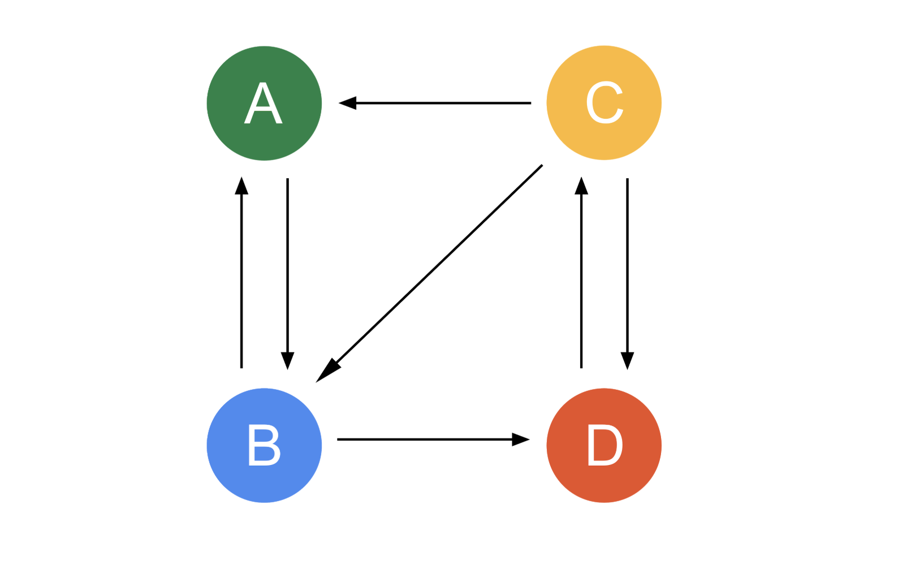
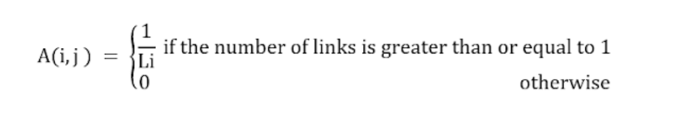
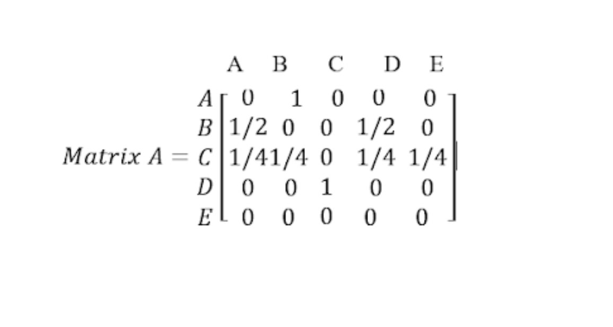
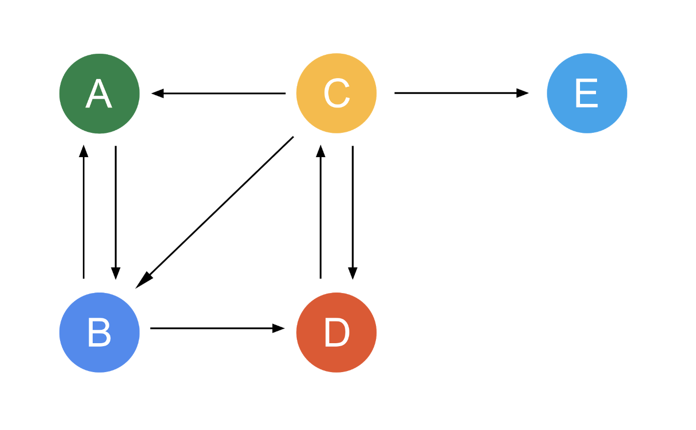
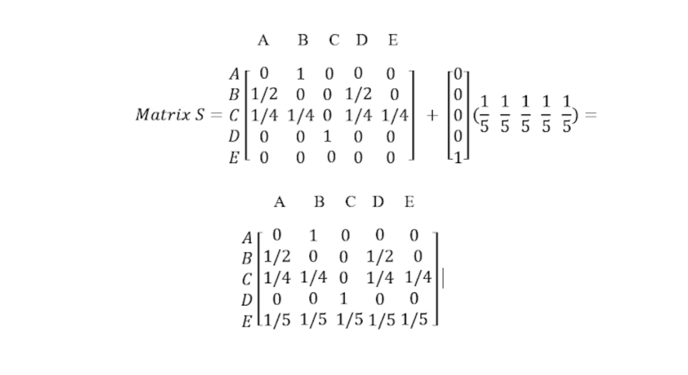
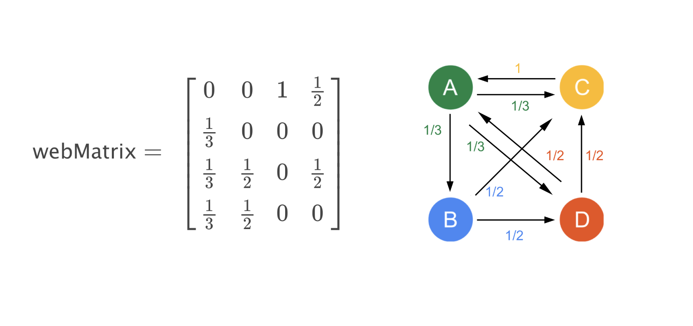
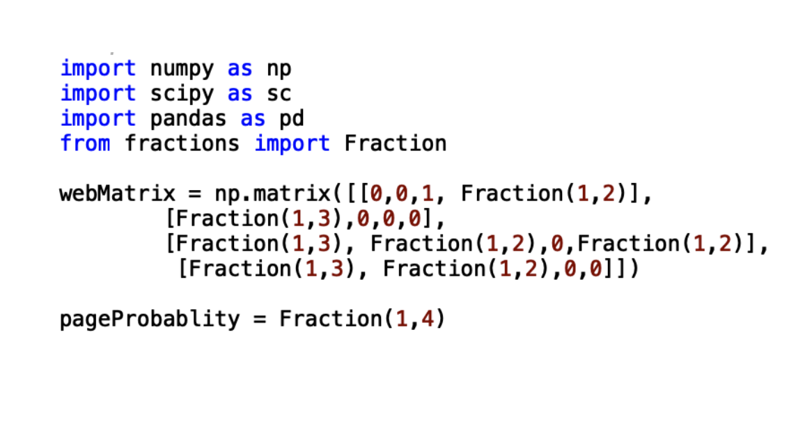
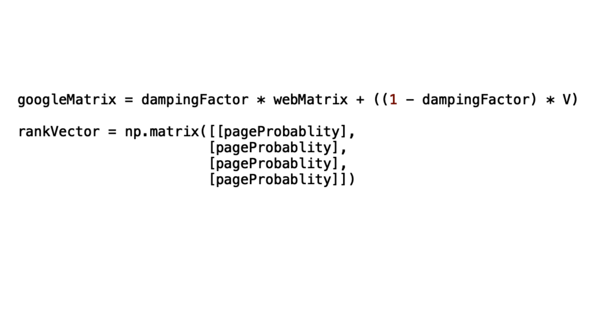
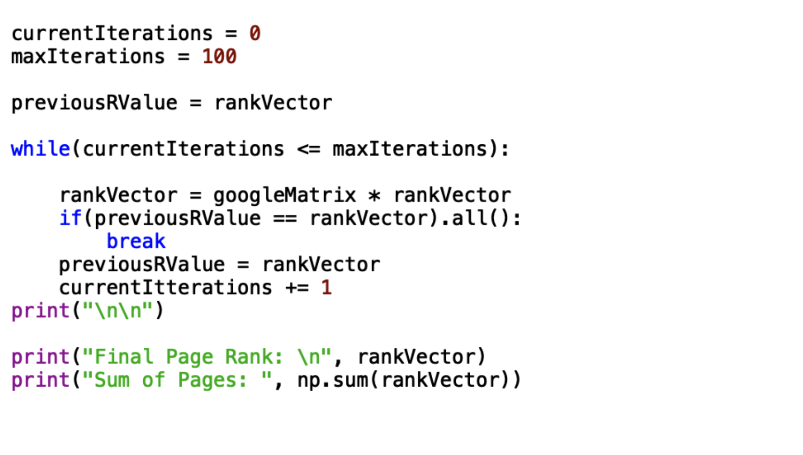
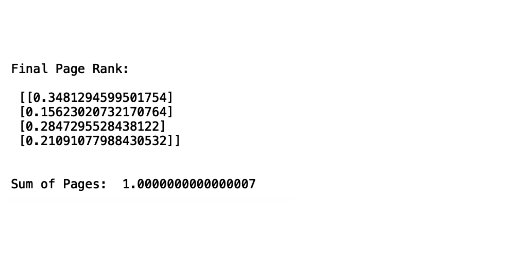

Introduction
On average, sixty million Americans utilize search engines every day. Google alone processes forty-six percent of all search requests, nearly double the traffic of Yahoo and four times that of MSN. Historically, web surfers tend to stick to one or two search engines if the results continue to be reliable. Thus, as long as Google continues to provide relevant and exceptional results there is no reason to assume that it will not remain king of all search engines. Google’s results continue to be exceptional due to the employment of the PageRank Algorithm developed by cofounder of Google Incorporated, Larry Page.
Pagerank
Google's PageRank algorithm seeks out to determine the rank of a page. Both the business and academic communities hold PageRank in high regard. Businesses, continually work to maximize their PageRank score as a marketing strategy and those in academia recognize the connections of PageRank to various areas of mathematics, computer science and graph theory. Prior to the PageRank Algorithm, search engines relied entirely on webpage content to determine the ranking of results. The problem with this approach was that web developers could manipulate the ranking of a particular web page by injecting concealed content on to the page. In contrast to ranking based on content, PageRank uses the link structure of the web to determine the importance of web pages.
The Mathmatics Behind Pagerank
The connections between a web pages can be represented as a web graph. Every node represents a page and a directed arrow from one node to another means that there is a link between two pages. The number of links between pages are an important facet of the algorithm. To illustrate the mathematics behind the algorithm, let us analyze the very simple web graph below, Page A has a link to Page B, Page B has a link to Page A and Page D, Page C has a link to Page A, Page B and Page D, finally, Page D has a link to Page C. Let L(page x) = y represent the number of links. Then, L( Page A) = 1, L(Page B) = 2, L(Page C) = 3, L(Page D) = 1.
Now that the number of links between the nodes has been determined, we can convert this simple web graph to a web hyperlink matrix. If N is the number of nodes in the graph our matrix would be of size N x N. A web hyperlink matrix is defined as
In the case of the web hyperlink matrix pictured above, the related matrix would be a 4x4 column stochastic matrix. In our case, the matrix A is naturally column stochastic due to the fact that every Page has at least one link to another page. The significance of the entries within the matrix are that, each entry represents the likelihood that a web surfer will click on the link to another page. Take Matrix A, the likelihood that a surfer on Page B clicks on Page A is ½ or 50%.
The dangling node is also another important aspect of the PageRank algorithm that needs to be handled. A node is called a dangling node if there are not outgoing links to other pages, in terms of the matrix, this would be a row of all zero entries.
In this example, L( Page A) = 1, L(Page B) = 2, L(Page C) = 4, L(Page D) = 1 and L(Page E) = 0 and the correlating matrix is pictured below.
A dangling node indicates that the likelihood of a surfer visiting another page after this is 0%. Although it is possible that the web surfer could stop searching the web at this point, it is also possible that the surfer navigated to another page via entry of a URL in a browser. Thus, our matrix is in need of a fix.
There are several ways to fix a dangling node, Google does not disclose which method they employ. However, a popular fix is to replace each dangling node row with the same probability distribution error vector with non-negative elements that sum to equal 1. The resulting matrix is equivalent to S = H + dw, where “H” is the hyperlink matrix, “d” is the column vector that identifies the dangling nodes and “w” is a uniform row vector . This fix is demonstrated below.
Our New Matrix S, accounts for the possibility that a surfer navigates to a new page using a URL.
The Google Matrix
Google anticipates the behavior of a random web surfer with the equation G = S + (1 - )I1v. ""is a scalar called the damping factor, the damping factor indicates that web surfers can move to other web pages by means other than selecting a link, values between 0.85 and 0.99 are used most frequently. “I1" is the column vector of ones. “V” is the row probability distribution error, called the personalization vector.
PageRank Demonstration
The genius behind the approach of Google's Pagerank algorithm is that it can be solved iteratively. To demonstrate the use of the PageRank Algorithm, I will be using plugins such as NumPy, SciPy, and Pandas to avoid programming some of the more complex mathematical methods associated with this particular algorithm. We can start with a simple “mini” internet that can be represented as a matrix. Each value in the matrix represents a link between two pages. This will be the foundation that we build our simple page ranking algorithm from.
It is very important to determine the default page probability for the model. The default probability is the probability of the user landing on one of the pages. For the model above, the default page probability is going to be 0.25 since there are four websites in our simple network which total 1.0 or 100%.
It is very important to determine the default page probability for the model. The default probability is the probability of the user landing on one of the pages. For the model above, the default page probability is going to be 0.25 since there are four websites in our simple network which total 1.0 or 100%.
The next step is arguably the most important part of the PageRank calculation. This is where you will calculate the Google Matrix. The Google Matrix will serve as your basis for the iterations that will take place in later steps. Along with the Google Matrix, we also specify the Rank Vector which is a vector filled with the original page probabilities.
Finally, the last step is to start our iterations in order to find the appropriate values for the PageRank vector. In order to do this, we start with the current rank vector and assign it to the variable previousRValue. This variable will keep track of our PageRank after every iteration. On average the PageRank of a simple network can be calculated after anywhere from 50-100 iterations. So for simplicity, we will just set the maximum iterations to 100 in order to yield accurate results. Once inside the loop, we repeatedly multiply the Google Matrix with the ranking vector. Each time this occurs, we assign the new value to previousRValue to keep track of the current rank, and then it repeats the process. If the value of the PageRank vector reminds the same as the previous iteration, we will break out of the loop and display the results, otherwise it will continue calculating the rank.

From the example above, we can conclude that the page rank of our simple network is as shown below. We can also confirm that our PageRank algorithm is accurate since the overall sum of the entire page rank totals 1.0, signifying a 100% probability for all the pages on the network.
After analyzing the result of our ranking algorithm, we can conclude that page A (0.348) is the most important, followed by C (0.284), D (0.210), and page B (0.156). With a quick reexamination of the visualization of our network, we can see that our results do reflect A as being the most important.
Conclusion
In 1996 when Larry Page and Sergey Brin developed PageRank at Stanford University, little did they know just how monumental their page ranking algorithm was going to become. This relatively simple approach to calculating the importance of pages on a network not only forever changed the way we navigate the web, but also launched Google into the tech empire we know it as today. Over the years, the PageRank Algorithm has had to undergo changes to account for the ever-growing number of webpages on the internet today, and the algorithm will continue to evolve, just as technology does. Regardless of any current or future changes, the core fundamentals of ranking page importance will remain the same and continue to be a staple for search engines for many years to come.